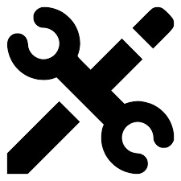

About Me
Education Background
Tertiary
University of Perpetual Help System DALTA - Molino – Bachelor of Science in Computer Science with specialization in Data Science
Secondary
University of Perpetual Help System DALTA - Molino - Humanities and Social Science (Grade 11 - Grade 12)
Bacoor National High School - Molino Main (Grade 7 - Grade 10)
Primary
Progressive Elementary School
 Technical Skills
- Languages: Python, HTML, CSS, JavaScript, PHP, C++
- Frameworks: Bootstrap, React, Dash
- Libraries: NumPy, Pandas, Scikit-Learn, Django, Flask, Matplotlib, Seaborn
- Tools: Git, XAMPP, RapidMiner, VS Code, PowerBI
- Database: MySQL
 Soft Skills
Soft Skills
- Analytical Thinking
- Problem Solving
- Time Management
- Team Collaboration
- Communication